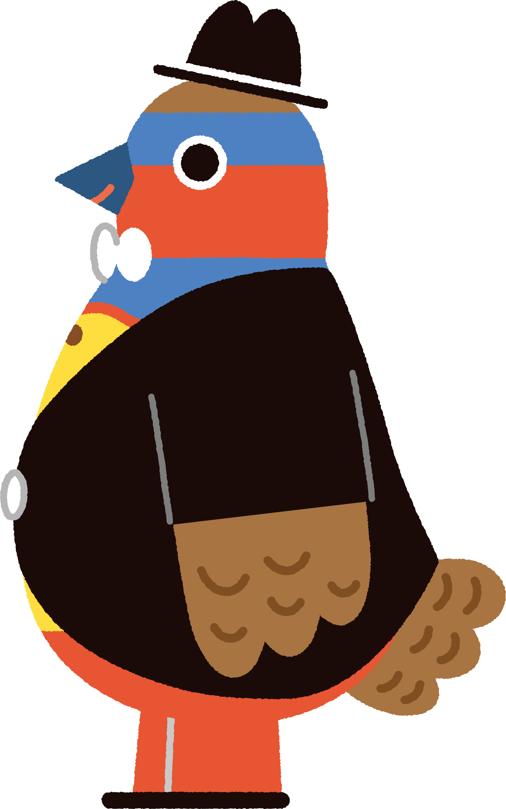
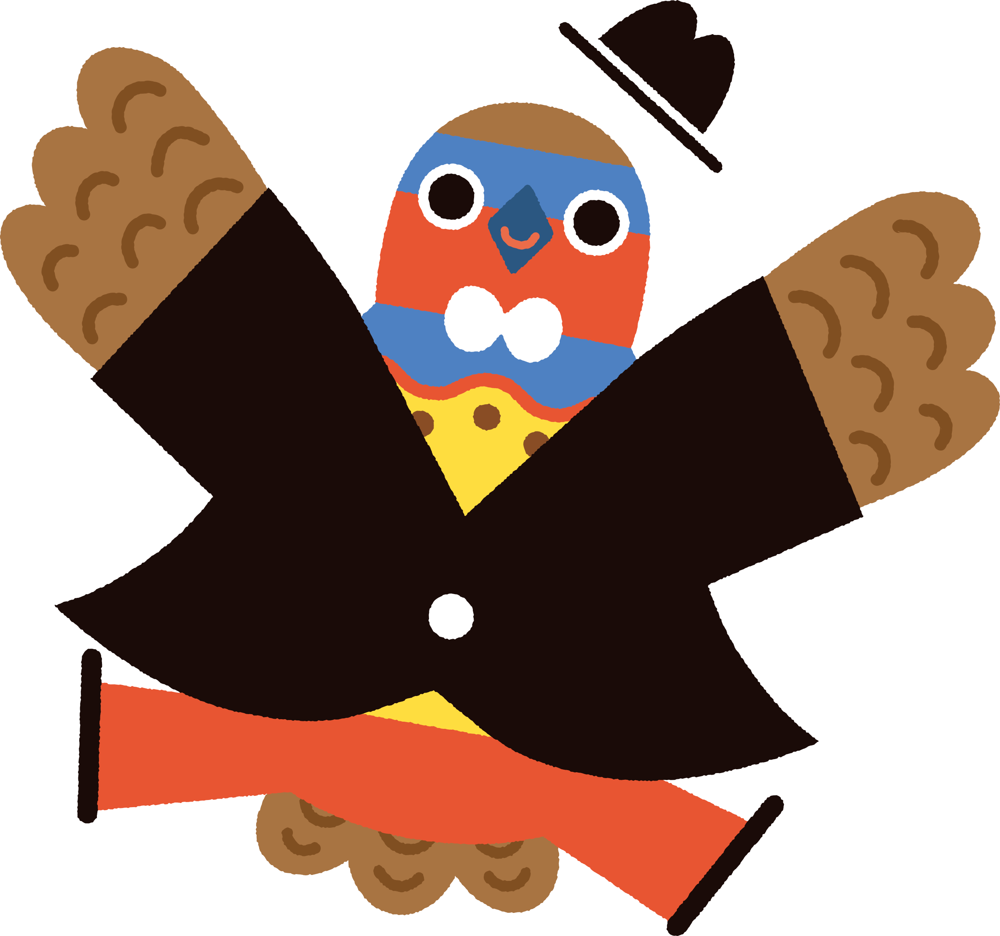
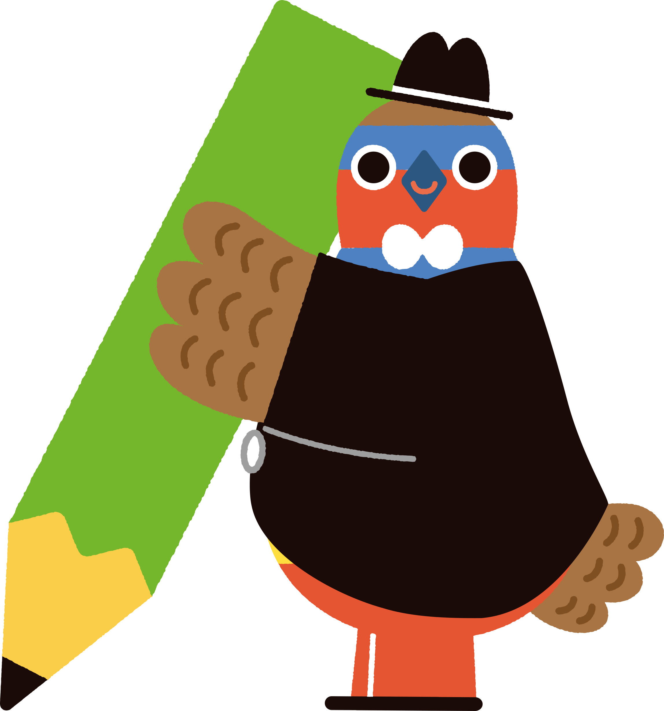

このイベントについて
「ようこそ守谷へ」は、守谷市に新しく転入された皆さまを、先輩市民がご近所さん感覚で歓迎する交流イベントです。守谷市民によるボランティア実行委員会が毎年開催しています。対象の期間に転入された世帯には、案内状（ハガキ）をお届けしています。
- 対象者令和7年8月1日～令和8年7月31日（2025年8月1日～2026年7月31日）に守谷市へ転入された世帯
- 参加費無料
- 主催ようこそ守谷へ実行委員会（守谷市民活動支援センター内）

開催概要
- 日時2026年11月28日（土）10:00～12:00
受付開始時間の詳細は下記「当日の流れ」をご覧ください - 会場常総運動公園 体育館
無料駐車スペースあり - 持ち物特にありません。お気軽にお越しください。
お子様連れ・お一人でのご参加も歓迎です。
当日の流れ
開催時間は10:00～12:00です。下記は昨年（2025年）の実績をもとにした予定の流れで、確定次第更新します。
- 9:30受付開始
- 10:00開会式／チーム交流クイズ／自己紹介タイム
- 11:00もりや情報ブース（自由見学）
- 11:40【チーム対抗】玉入れ
- 12:00閉会式

もりや情報ブース
- チーム交流クイズ・玉入れ
- もりやグルメマップ
- こども工作ブース
- カブトムシマップ
- 市役所ブース
- ALT（外国語指導助手）ブース
- 己書もりや道場
- 守谷市ボッチャ協会
- 守谷鳥類調査会
お申込み方法
お申込みはGoogleフォームから受け付けています。下記ボタンよりお進みください。
お申込み締切：2026年10月12日
Googleフォームで申し込むフォームが分からない場合は、下記の問合せ先までご連絡ください。
昨年の様子
アクセス
常総運動公園 体育館
〒302-0117 茨城県守谷市野木崎4700番地
- 公共交通機関つくばエクスプレス、関東鉄道常総線の守谷駅西口 ⇒ もりやコミュニティバス（市役所・板戸井ルート）大野橋下車 ⇒ 徒歩約700m
※時間帯により「いこいの郷常総」へ向かうルートあり。フリー降車で公園入口付近下車